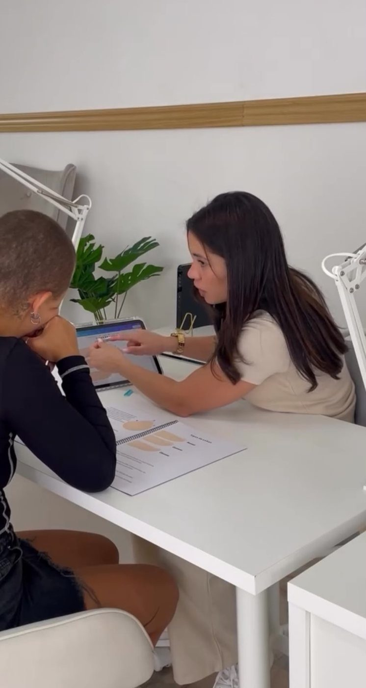
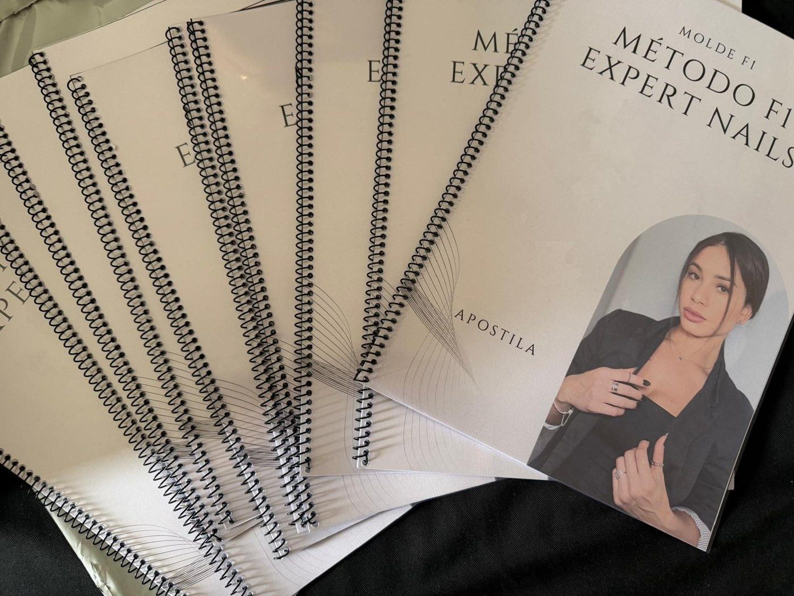
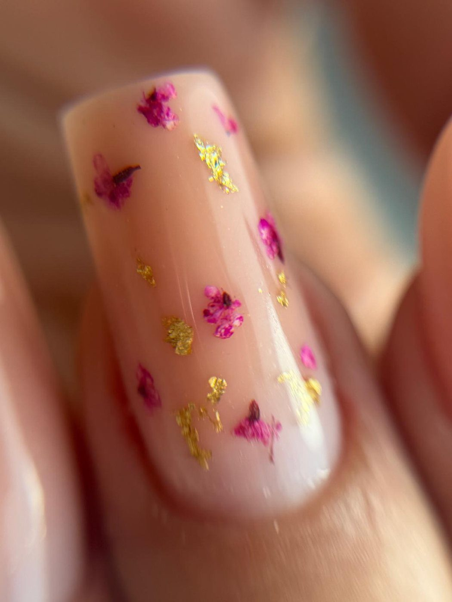
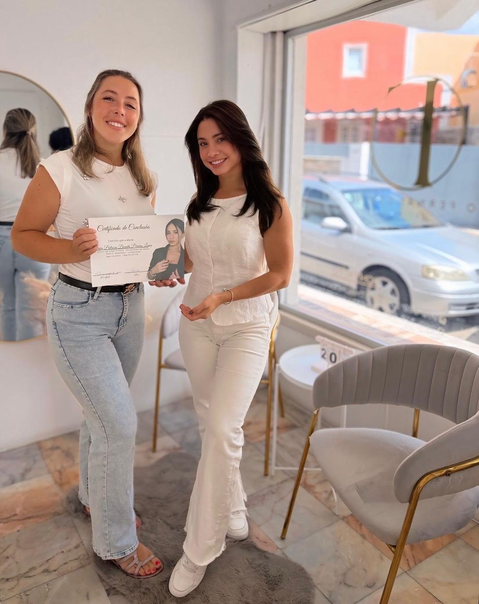

Aprenda a técnica que a Thalia usa todos os dias nas suas clientes.
Do zero ao molde F1 e ao molde russo, em 2 dias presenciais. Sem teoria que não se aplica: você pratica em si mesma, com acompanhamento individual, e sai sabendo o que fazer em cada etapa.
A Thalia confirma a data da próxima turma pelo WhatsApp e responde em até 24h.

Porquê a Thalia
Quem ensina vive disto.
Não é um curso gravado nem um manual genérico. É o método de quem atende todos os dias, no seu próprio espaço, e decidiu passar o que sabe a quem quer começar do jeito certo.
Criou o Método F1 Expert Nails com um objetivo: ajudar você a conquistar a sua independência financeira e a ser uma nail designer de sucesso.
Ensina o que faz todos os dias
O passo a passo do curso é o mesmo que a Thalia aplica nas clientes do Espaço Fernandes Beauty. Cada etapa tem um porquê, e você aprende o porquê.
Prática em si mesma, com acompanhamento
Não há modelo: a demonstração e a prática são feitas em você mesma, presencialmente e de forma individual. Aprende com as mãos, não só a ouvir.
Sai com mais do que técnica
Apostila, certificado, suporte pós-curso e posicionamento e marketing. Para começar a atender com segurança e saber como se apresentar.
O programa
4 capítulos, do básico ao acabamento fino.
Uma sequência pensada para quem começa do zero: primeiro compreende, depois prepara, depois aplica, e fecha com os moldes.
Fundamentos
- Introdução teórica
- Apresentação dos materiais
- Aspectos importantes
- Anatomia e fisiologia
Preparação
- Manicure russa e combinada
- Preparação correta da lâmina
- Tipos de unhas
- Tipos de fungos
Aplicação
- Aplicações corretas
- Formatos
- Lixamentos técnicos
- Esmaltação em gel correta
Moldes e acabamento
- Acabamento fino
- Molde F1
- Molde russo
Incluído
Tudo o que leva consigo
Além das 2 jornadas de formação, sai com material para consultar sempre e com a Thalia por perto depois do curso.

Resultados
Trabalhos da Thalia
O nível de acabamento que vai aprender a fazer.



Quem já passou por aqui
Alunas certificadas
Cada aluna sai com o certificado do Método F1 Expert Nails.




A formadora
Thalia Fernandes
Manicure desde os 12 anos, a Thalia cresceu dentro de salão de beleza. A paixão pelas unhas começou no Brasil; hoje, aos 28 anos, é especialista em molde F1 e molde russo, fundadora do Espaço Fernandes Beauty e formadora.
Criou o Método F1 Expert Nails com um objetivo: ajudar você a conquistar a sua independência financeira e a ser uma nail designer de sucesso.
Investimento
Comece do jeito certo, com quem faz isto todos os dias.
- 2 dias presenciais, das 9h30 às 17h30
- Prática em si mesma, com acompanhamento individual
- Apostila, certificado e suporte pós-curso
- Caixa com mimo e coffee break
Entrada de 50€ para garantir a vaga, descontada no valor total.
A Thalia confirma a data da próxima turma pelo WhatsApp e responde em até 24h.